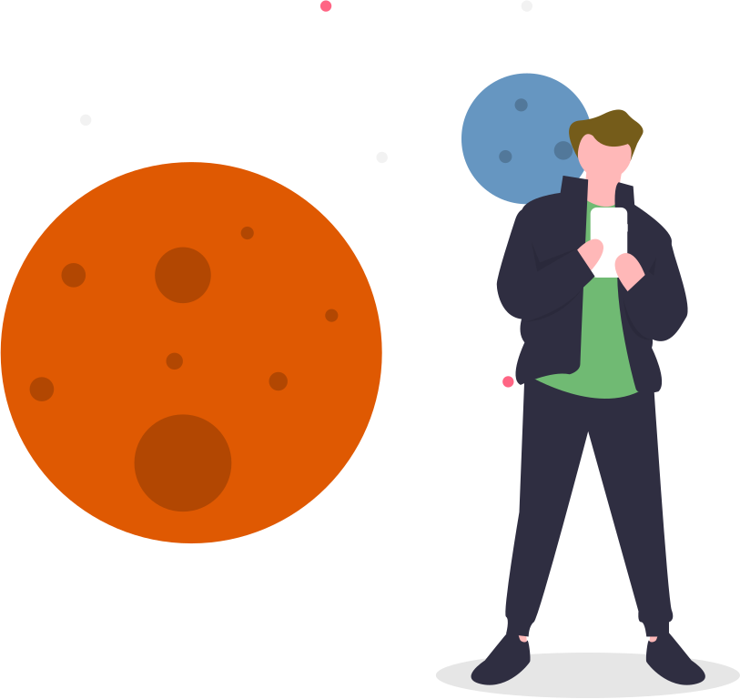
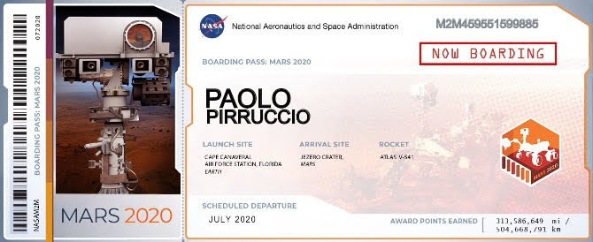

L’idea del progetto nasce da una passione personale per lo spazio. Ho voluto racchiudere le informazioni principali riguardo la missione Mars 2020 in un sito che utilizzasse un linguaggio semplice per venire incontro sia agli appassionati sia ai curiosi che non hanno una conoscenza approfondita dell'argomento.
Le icone Material e i font DM Sans e Press Start provengono da Google Fonts.
I diritti delle foto della missione appartengono a NASA e JPL-Caltech. Sono prelevati dai kit stampa
liberamente accessibili e consultabili delle missioni NASA.
Le basi delle illustrazioni provengono da undraw.com e adattate da me attraverso il programma Sketch.
Le immagini a tutto schermo sono state scaricate gratuitamente da Unsplash e Pexels e rielaborate con GIMP.
I testi sono rielaborazioni personali delle informazioni riportate sul sito della NASA e sulle pagine Wikipedia in lingua italiana e inglese della missione Mars 2020.
Il codice JavaScript evidenziato proviene dalla dispensa Programmazione in JavaScript di V. Ambriola. Il codice HTML e CSS è stato validato tramite il W3C Validator.